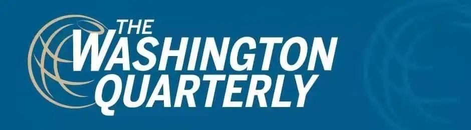

收录于合集 #美国研究 24个

作品简介
【作者】 Rebecca Friedman Lissner，曾任宾夕法尼亚大学研究员，现为美国海军战争学院战略与作战研究部的助理教授。
Mira Rapp-Hooper，耶鲁大学法学院的高级法律研究员，耶鲁大学Paul Tsai中国中心的高级研究员。主要研究方向为中美关系和亚洲国家安全问题。
【编译】 阮含含（国政学人编译员，辽宁大学国际经济政治学院硕士）
【校对】 赵婧如、李雯珲
【审核】 梁坤
【排版】 张湘苹
【美编 】张越涵
【来源】 Rebecca Friedman Lissner & Mira Rapp-Hooper (2018) The Day after Trump:American Strategy for a New International Order, The Washington Quarterly , 41:1, 7-25, DOI:10.1080/0163660X.2018.1445353
期刊简介

美国《华盛顿季刊》（The Washington Quarterly），是一本有关国际安全、外交关系以及政策制定的国际事务季刊杂志，由战略与国际研究中心（CSIS）创办，乔治·华盛顿大学艾略特国际事务学院及泰勒弗朗西斯集团共同承办。2019年期刊影响因子1.288，在95种国际关系期刊中排名第47。
**** 特朗普之后：
**美国应对新国际秩序的战略 **
The Day after Trump:
American Strategy for a New International Order
Rebecca Friedman Lissner
Mira Rapp-Hooper
文章导读
01
导论
外交政策精英们已经基本达成共识，即二战以来由美国所主导的自由主义国际秩序正在消亡，单靠惯性已经无法维持，唯一的希望就是美国治国方略的调整。然而，随着唐纳德·特朗普（Donald Trump）出人意料地赢得大选登上总统宝座，国际政治的未来以及美国领导人在其中的作用进入了动荡的状态。特朗普当政以来，其外交政策具有明显的交易型战略的特征。
无论在此治理下美国的外交政策的具体轨迹如何，其大概方向已经明确。他的继任者所要面临的世界将与冷战结束、甚至是二战以来美国所面临的国际环境有很大不同。最好的情况是，下一任总统继承的是一个有瑕疵但仍能存续的自由主义国际秩序，其中某些部分如全球自由贸易体系被严重削弱，另一些像美国联盟体系遭到破坏，但并未完全失效。最坏的情况是，特朗普会给他的继任者留下一个无法拯救的秩序。 无论哪种情况，无论是2020年还是2024年，我们都将无法回到传统意义上的“国际秩序”。
国际事务专家们必须承认，现在我们要认真进行战略思考，而不是为自由主义国际秩序进行辩护或者一味批判“美国优先”政策的顽固和冲动。相反， 外交政策战略家们必须抓住时机，评估哪些要素在二十一世纪仍然重要，并确定哪些改变是适当的和必要的。只有从内外部深入研究挑战该秩序的结构性力量，我们才能为美国制定新的大战略。
02
什么是自由主义国际秩序
国际秩序是指在国家之间建立基本规则、原则和制度的治理安排，是创造规则和达成国家间合意的基本框架。而自由主义国际秩序是一种特定类型的秩序，除此之外还有其他类型的国际秩序。自由国际主义强调国际贸易促进世界和平，寻求规避运用武力的国家间安排，并认为民主国家适合在这种类型的系统中领导和运行。 国际联盟 是建立自由主义国际秩序的第一次尝试，但二战的爆发宣告其失败。二战后期，美国和英国开始重建威尔逊式的国际秩序，保留其原本的原则，同时创新体制设计，更加强调大国的领导地位。这一新自由国际主义包括安全、经济和政治问题，而这些问题大多数在1945年以后被胜利的同盟国正式确立。
新自由秩序的主要政治治理机构是 联合国 ，同之前的国际联盟一样，旨在维护国家间和平。联合国在承认主权平等原则的同时，承认五个国家（第二次世界大战的主要战胜国）是安全理事会的常任理事国，这隐含着领导国的思想。为了管理货币、商业和金融关系，各国联合建立了布雷顿森林体系，成立了国际货币基金组织（IMF）、世界银行以及最终成为世界贸易组织（WTO）的机构。随着时间的流逝，根据需要，不同层次的制度被添加到国际秩序中，其中一个例子就是《核不扩散条约》。这些错综复杂的安排不是一蹴而就的，而是历经多年，通过相互交织的协议、组织和法律逐渐形成的。尽管事实上冷战在二战正式结束之前就开始了，但苏联还是其中许多治理机构的一部分。
03
**** 二战后国际秩序的演变
第二次世界大战后的自由主义体系并未将秩序同时或同等程度地将秩序带到全球各地。威尔逊（Wilson）的最初构想及其在本世纪中叶的实现方式显然起源于西方。尽管联合国向所有主权国家开放，但世界上许多地方仍处于殖民统治之下，并未立即获得联合国成员国的资格。因此，联合国成立之初，仅有51个成员国，而如今为193个。布雷顿森林体系下的货币体系虽然是全球性的，却由美国及其盟友西欧国家、加拿大、澳大利亚和日本主导，且在成立的前十年致力于恢复西欧和日本的经济。最终，这些基础性的自由主义机制促进形成了多种形式的区域秩序，例如东盟和亚洲发展银行。
过去的几十年里，该秩序经历了一系列危机。特别是在20世纪60年代末到70年代，国际货币体系因美国的信用危机而陷入困境。而后组织机构发展缓慢，开始重构，并最终有所好转。尽管这些机构和规则在过去的几十年中得到了巩固，但它们并没有融合为一个实体，而是在其成员的意愿和利益的支持下，折衷地融合成一系列协议和公约。越来越多的规则和制度开始在政治，经济和安全领域发挥作用，并将重点放在保护某些基本原则上。
1991年苏联解体时，由美国领导的机构和政权仍然存在。它们进行了一系列调整，以迎接一个美国主导的单极时代，或者说是无与伦比的霸权时代，这使得著名政治学家弗朗西斯·福山（Francis Fukuyama）宣布“历史的终结”。在这个无可争议的美国具有至高无上地位的时代，国际机构的潜在影响力以及可以援引其规则的方式的限制比以往任何时候都少。现如今，当美国战略家哀叹国际秩序日益受到攻击时，往往还以冷战后的情况作为参照点。
1945年后的自由国际秩序从来都不是具有普遍影响力的整体或透明的组织结构。它在很大程度上被视为西方的愿景，最初关注的是二战后的复兴，在冷战时期蓬勃发展，非殖民化之后扩散到亚洲、非洲和拉丁美洲，在70年代遭到冲击并进行调整，直到1990年代竞争对手的灭亡才可以称得上是普世的秩序。“自由主义国际秩序”一直是美国全球统治的简写。这种相对温和的霸权之所以持续，是因为它为其他国家带来了可观的经济、政治和安全利益收益，并且在国家间互动中具有可预测性。
04
外部压力
自由主义国际秩序从根本上反映了美国的实力、原则和偏好。作为全球霸主，七十多年来，美国一步步制定和扩大地缘政治游戏规则，同时美国还拥有推翻这些规则的权力。它提供的安全伞减弱了国际竞争，促进合作。在一定程度上可以认为，对该秩序造成冲击的根源是美国在军事、经济和政治力量上的衰落。
自冷战结束以来的四分之一世纪， 权力转移削弱了美国在经济和军事上的优势。 从经济上看，美国在全球GDP中所占份额从二战后的50％下降到如今的24％。从总体数据上来看，过去25年来，经济活力发生了由西向东的转移。从军事上看，美国的军事能力虽然在目前依然遥遥领先，但有一些重要地区，部分国家的军事实力足以与美国在该地区的军事优势抗衡。
随着美国霸权的衰退，自由主义国际秩序难以准确反映全球经济和军事实力的分配，因此美国的竞争者对自由主义国际秩序的认同也有所减弱。 俄罗斯和中国已经开始根据自己的利益调整部分要素，维护自己在有限区域内的主导地位，但还没有全盘挑战自由主义国际秩序。
从历史上看，这种修正主义的挑战是冲突的前奏，特别是 权力转移将越来越多地促使崛起国以武力推翻令其不满的现有制度。 然而，在如今相互联系的世界里，可以互为毁灭的客观条件（核武器和经济损失）很可能会抑制美国与其竞争对手之间的战争。 合作带来的正向收益进一步抑制了冲突。 然而，这些稳定的力量不足以维持整个秩序。相反，不满现状的非自由主义大国将继续挑战现有的国际组织，给自由主义国际秩序施加压力，使其分裂或陷入混乱。
一个破碎的或混乱的世界将无法应对下个世纪的跨国挑战，这些挑战对传统上合法的基于主权国家的解决方案带来冲击。解决气候变化问题要求从全球到地方采取纵向一体化的措施，但国际气候制度仍处于萌芽阶段。面对机器人技术和人工智能的快速发展，行业规范显然比自上而下的国家法规（更不用说国际法规）更容易产生。恐怖主义仍然是重大威胁，而且由于信息和技术的传播日益加剧。无论是国家还是非国家行为体都有责任保障网络空间的安全，但治理网络犯罪的规则寥寥无几，更不用说对网络战争的明确定义。其中，许多新的威胁都是缓慢形成的，且不直接威胁国家领土主权安全，这使得侵略更难界定和预测。此外，这类活动大多发生在规则和规范相对较少的领域，使各国更难集体或有效地做出反应。如果要应对这些挑战，就必须制定新的制度；即使是重要的自由主义国际秩序也很少能提供现成的解决办法。
05
内部压力
除了这些巨大的外部压力外，美国领导的秩序还必须应对来自内部的压力。自二十世纪中叶以来，自由国际主义一直是美国外交政策的指导原则。从20世纪90年代初开始，历届美国总统的共识是拥护美国在全球领导地位，并利用这一地位在全球传播民主和自由市场。尽管特朗普本人在很大程度上是更广泛的政治、经济和文化力量的化身，但他的崛起是对自由主义国际秩序中美国的领导地位乃至美式国际主义的根本挑战。
现在， 长期的社会经济发展趋势威胁着国内外对自由主义政治的支持 。 随着全球化程度不断提高以及自动化和数字化的发展，美国低技能工厂向海外转移，使得许多美国人的经济前景暗淡。生产效率的飞跃式提高带来的是更高的生产率和更少的劳动力需求。虽然多数美国公众继续支持全球贸易，但显然不能忽视其中的反对声音。
技术变革是这些趋势中最强大和不可阻挡的，但是自由国际主义的标志（尤其是开放经济和边界）是更为重要的政治目标。同时，移民及其后裔的增加使得到2055年，美国将不存在单一多数种族或民族，这一人口结构的变化伴随着低迷的经济形势，大大加剧了美国人对经济和文化状况的焦虑感。恐怖主义的梦魇加剧了人们对国家边界渗透威胁人身安全的担忧。在这种背景下，无论是民族、种族还是族裔，对特定身份认同的诉求变得更加突出，而美国人对民主政府能否应对这样的挑战持怀疑态度。特别是在千禧一代中，这种犬儒主义已经转化为越来越倾向于强势领导，而不是虚无的民主的选举。 这些自由主义运动和民粹主义运动的不断兴起的政治环境，给美国的民族主义和政治秩序带来威胁。 更重要的是，民粹主义的崛起不仅在美国，而且在整个西方国家都表现强势，欧洲—美国最坚定的自由主义伙伴也面临着类似的挑战。
内部的破裂对西方领导的国际秩序、以及对自由民主集团本身的凝聚力产生深远的影响。 如果现有的国内结构无法解决内部的经济、安全、政治担忧，那么寻求规范国家间互动的国际秩序就不可能持久。美国外交政策的未来及其所支持的机构的存在需要稳定的国内基础。21世纪的美国国际主义要想继续存在，就必须承认和解决当下民族主义盛行的根源。
06
迎接“美国优先”的挑战
“美国优先”愿景之所以受到关注，正是因为它呼应了美国外交政策中长期存在的杰克逊式民粹主义和单边主义的传统。它的“经济民族主义”准则试图通过退出国际贸易、摆脱多边体制的束缚、遏制移民潮来重新确立国内对经济的控制。有人认为，这样做，美国可以重新获得主权，同时培养更纯粹的国家认同感，改善普通美国人的命运。
这种“美国优先”的理念注入了美国重建外交关系的计划，其 基础是单边主义和狭隘的美国国家利益。 通过退出需要做出妥协的多边协议，美国将寻求更好的双边关系——特别是更有利的贸易协议，以及旨在保护西方免受伊斯兰恐怖主义威胁的合意伙伴关系。在拒绝制度化和多边合作的过程中，特朗普唤起了美国单边主义模式。虽然单边主义可以表现为孤立主义，但在特朗普政府的表现并非如此： 相反，“美国优先”意味着美国对于全球参与的选择性和不可预测性，而不是全球大规模战略收缩并由此导致领导地位的变化。
“美国优先”可以视为是对自由国际主义的全面谴责，是美国另一宏伟战略构想的前奏。当然，特朗普的胜利并不等于美国公众全盘接受他的外交政策原则。2016年大选在外交政策问题上没有胜负，大多数民众继续支持美国的全球领导地位，包括联盟及其在国际机构和协议中的成员资格。但是这一挑战让人民认识到威胁自由国际秩序的内部压力是如何放大到美国的外交政策中的——这表明，对美国国际主义的挑战不会随着特朗普离任而消失。
回归自由国际主义的正统学说并不是一个有效的方案： 现存秩序面临的一系列挑战，在现有的知识框架内根本无法管理。即使公众对国际主义的持续支持克服了“美国优先”面临的挑战，当代国际威胁的性质也表明美国需要推进新的秩序形式。
07
通往下一个时代的重要战略
特朗普政府否认国际协议以及不按常理出牌的政治风格使得美国的国际领导力严重下降。但是，至少在未来的几十年内，没有任何一个国家在全球舞台上能够比美国更强大。而在当前动态变化的情况下，国际事务专家们不能投入于批评自由国际秩序衰亡，而应该认识到新的国际秩序的建立通常伴随着一段黑暗的时代。
当前的任务是艰巨的： 二十一世纪的国际秩序愿景是通过美国战略实现外交政策目标与物质和政治资源适当地结合起来。国际关系专家必须注意将这一愿景基于综合全面的知识基础智商：反映当前和将来的世界的原则，而不是过去的世界或理想的世界。因此，必要的第一步是对现存国际秩序所依据的假设进行彻底的审视，以确定这些假设是否能够应对来自内部和外部的日益增长的压力。这种批判性分析应集中在三个基本问题上。
首先，重建后的秩序必须应对专制型的竞争对手重回强权政治产生的广泛政治和经济影响。 经济开放带来了正向收益和高度的相互依存，但它也推动了美国主要潜在对手的增长。非自由主义竞争对手的挑战提出了一系列问题：美国是否应该追求以与专制政权持续合作为基础的国际秩序愿景？如果一个国际秩序中的主要国家不是自由主义国家，那么它在经济和政治上是否可以开放？如果不是，这对秩序的组织原则意味着什么？如果是，混合政体秩序将如何构建？当前自由国际秩序的哪些方面可能会被修改，美国应该在哪些方面抵制这些变化？
第二，必须使安全机构现代化以应对暴力冲突不断变化的特点。 新的战争领域的出现挑战了传统意义上的威慑概念，并减小了侵犯国家主权的障碍。这包括次常规战争和准军事战争，这些战争依赖于传统的手段，中俄两国在其周边地区使用的方式非常不同。还包括网络战，这是一个新的冲突领域，还不受国际法或国际机构的约束。国家集体防卫以及个人防卫的规范应该如何执行？国家应如何确定和应对不符合传统冲突的武力使用？全球秩序在多大程度上可以削弱新的安全竞争模式？美国将在哪些领域需要独立的防御手段？
第三，网络威胁、气候变化、信息和技术传播、恐怖主义以及大流行病所带来的日益严重的危险，需要建立一个全球秩序来促进在这些缺乏治理的领域中的合作。 鉴于这些跨国挑战，国家主权应在多大程度上保持独立？从根本上说，在构建全球秩序的新愿景时，国家是否可以并且应该仍然作为主要的组织单位；如果不是，应该由哪些行为体在哪些问题上来取代国家的作用？
08
结论
21世纪的国际秩序调整应以类似的方法为指导，即明确现存的战略挑战。首先，必须明确是哪些国际力量导致了自由主义国际秩序的瓦解，以及美国国内的制约因素。第二，外交政策战略家在思考制度设计的指导性原则时，会发现有些现存结构仍然相关和有用，而有些结构则需要进行适度的调整（但基本上是合理的）。任何新的设计都必须考虑该秩序的基本价值，以及美国是否能够且应该保留对嵌入西式政治和经济自由主义的长期承诺。最后，战略家必须界定该秩序的范围，并捍卫其范围之外的美国利益。
设想美国建立新的国际秩序形式的战略是一项理性的工作，同样也是一项重要的工作。随着盛行的主流趋势和不合时宜的总统任职继续在国内和国际政治造成冲击，破坏是可以肯定的。重建新的和所需的秩序形式的周密计划需要提前准备。如果外交政策思考者不积极预测塑造国际体系的力量，并将这些力量转化为美国全球角色的驱动力，那么四到八年后，他们会发现世界的变化不符合他们的外交期望。相反，如果他们提前设想好一个适合世界的国际体系和美国战略，那么在混乱的局势破裂时，他们将及时带来新的秩序。
译者评述
从传统意义上而言，特朗普当选美国总统是对自由国际秩序的冲击。本文作者也是基于这一基本看法讨论，作者认为无论是2020年还是2024年（即无论特朗普能否连任），都将无法回到传统意义上的“自由国际秩序”。面临国际环境的改变，美国想要在世界秩序中继续扮演一个领导者角色，就必须提前考虑现有秩序中的哪些要素在二十一世纪仍然重要，并确定哪些改变是适当的和必要的，制定美国的未来大战略。作者的这篇文章有一定的前瞻性，大有未雨绸缪的意思，2018年（特朗普上任一年后）写的这篇文章讨论的却是特朗普任期后的自由国际秩序形态，对当下刚刚结束大选的美国及世界具有借鉴意义。
当下已经确认拜登赢得总统选举，我们可以认为留给拜登的是作者所说的好的情况，即有瑕疵但仍能存续的自由主义国际秩序。特朗普上任后的第二年就与中国大打贸易战，对欧洲以及美洲市场也一度加高关税，全球自由贸易体系被严重削弱；另外美国强迫欧洲盟国以及日本增加军事开始一定程度上破坏了美国联盟体系，但到目前为止这一体系还未完全失效。拜登上台后自由秩序何去何从值得深思。首先，拜登表示若当选会重新加入巴黎气候协定、世界卫生组织，强化与北大西洋公约组织的关系，这意味着传统自由主义强调的多边主义依然会是拜登执政遵循的原则。但我们可以认识到的是，美国国内阶级的严重撕裂以及在国际社会层面已经放弃领导角色的现实对拜登来说都是挑战，国内问题解决不好，任何对外政策始终治标不治本。因此，拜登是否能让美国重回世界领导地位的基础在于其在短期内能否找到有效方法先解决国内矛盾。
文章观点不代表本平台观点，本平台评译分享的文章均出于专业学习之用, 不以任何盈利为目的，内容主要呈现对原文的介绍，原文内容请通过各高校购买的数据库自行下载。
添加 “国小政”微信
获取最新资讯


国政学人
支持学术公益与知识传播
微信扫一扫赞赏作者 __赞赏
已喜欢，对作者说句悄悄话
取消 __
发送给作者
发送
最多40字，当前共字
上一页 1/3 下一页
长按二维码向我转账
支持学术公益与知识传播
受苹果公司新规定影响，微信 iOS 版的赞赏功能被关闭，可通过二维码转账支持公众号。